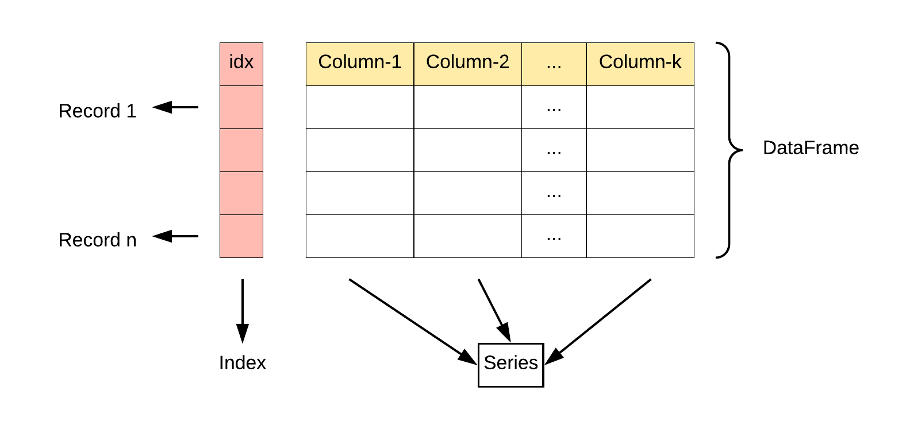
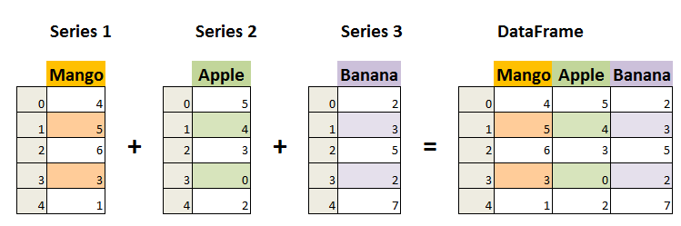
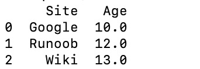
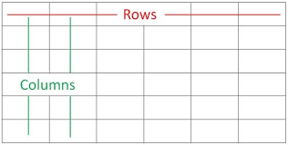

Pandas データ構造 - DataFrame
DataFrame は Pandas のもう一つの核となるデータ構造で、2次元のテーブルやデータベースのデータテーブルに似ています。
DataFrame はテーブル型のデータ構造であり、順序付けられた列のセットを含み、各列は異なる値の型（数値、文字列、ブール値）にすることができます。
DataFrame は行インデックスと列インデックスの両方を持ち、Series で構成された辞書（共通のインデックスを持つ）と見なすことができます。
DataFrame は、データアクセス、フィルタリング、分割、結合、再形成、集約、変換などの操作を行うためのさまざまな機能を提供します。
DataFrame は非常に柔軟で強力なデータ構造であり、データ分析、クリーニング、変換、可視化などのタスクに広く使用されています。
DataFrame の特徴：
二次元構造：
DataFrame2次元のテーブルであり、Excel スプレッドシートや SQL テーブルと見なすことができ、行と列を持ちます。これを複数のSeriesオブジェクトで構成された辞書と見なすことができます。列のデータ型：異なる列は、整数、浮動小数点数、文字列、Python オブジェクトなど、異なるデータ型を含むことができます。
-
インデックス：
DataFrame行インデックスと列インデックスを持つことができ、Excel の行番号と列ラベルに似ています。 -
サイズ変更可能：列を追加および削除でき、Python の辞書に似ています。
-
自動整列：算術演算やデータ整列操作を行うとき、
DataFrameインデックスが自動的に整列されます。 -
欠損データの処理：
DataFrame欠損データを含めることができ、Pandas はNaN（Not a Number）を使用して表します。 -
データ操作：データのスライス、インデックス、サブセット分割などの操作をサポートします。
-
時系列サポート：
DataFrame時系列データに対する特別なサポートがあり、時間データのスライス、インデックス、操作を簡単に行うことができます。 -
豊富なデータアクセス機能：これらの
.loc、.ilocと.query()メソッドを使用して、データを柔軟にアクセスおよびフィルタリングできます。 -
柔軟なデータ処理機能：データの結合、再形成、ピボット、グループ化、集約などが含まれます。
-
データ可視化：ただし
DataFrame自体は可視化ツールではありませんが、Matplotlib や Seaborn などの可視化ライブラリと組み合わせてデータ可視化を行うことができます。 -
効率的なデータ入出力：データの読み書きを簡単に行え、CSV、Excel、SQL データベース、HDF5 形式など複数の形式をサポートします。
-
記述統計：記述統計データを計算するための一連のメソッドを提供します。例えば
.describe()、.mean()、.sum()などです。 -
柔軟なデータ整列と統合：他の
DataFrame或Seriesオブジェクトと簡単に結合、連結、または更新操作を行うことができます。 -
変換機能：データセット内の値を変換できます。例えば
.apply()メソッドを使用してカスタム関数を適用できます。 -
ローリングウィンドウと時系列分析：データセットに対するローリングウィンドウ統計と時系列分析をサポートします。


DataFrame のコンストラクタは次のとおりです：
pandas.DataFrame(data=None, index=None, columns=None, dtype=None, copy=False)
パラメータの説明：
data：DataFrame のデータ部分で、辞書、2次元配列、Series、DataFrame、または DataFrame に変換可能な他のオブジェクトを使用できます。このパラメータを指定しない場合は、空の DataFrame が作成されます。index：DataFrame の行インデックスで、各行のデータを識別するために使用します。リスト、配列、インデックスオブジェクトなどを指定できます。このパラメータを指定しない場合は、デフォルトの整数インデックスが作成されます。columns：DataFrame の列インデックスで、各列のデータを識別するために使用します。リスト、配列、インデックスオブジェクトなどを指定できます。このパラメータを指定しない場合は、デフォルトの整数インデックスが作成されます。dtype：DataFrame のデータ型を指定します。NumPy のデータ型、例えばnp.int64、np.float64などです。このパラメータを指定しない場合は、データからデータ型が自動的に推測されます。copy：データをコピーするかどうか。デフォルトは False で、データをコピーしないことを意味します。True に設定すると、入力データがコピーされます。
Pandas DataFrame は2次元の配列構造であり、2次元配列に似ています。
例 - リストを使用して作成
data = [['Google', 10], ['Runoob', 12], ['Wiki', 13]]
# DataFrameを作成
df = pd.DataFrame(data, columns=['Site', 'Age'])
# astypeメソッドを使用して各列のデータ型を設定
df['Site'] = df['Site'].astype(str)
df['Age'] = df['Age'].astype(float)
print(df)
辞書を使用して作成することもできます：
例 - 辞書を使用して作成
data = {'Site':['Google', 'Runoob', 'Wiki'], 'Age':[10, 12, 13]}
df = pd.DataFrame(data)
print (df)
出力結果は次のとおりです：

次の例では ndarrays を使用して作成します。ndarray の長さは同じである必要があります。index を渡した場合は、インデックスの長さは配列の長さと等しくなければなりません。インデックスを渡さない場合、デフォルトではインデックスは range(n) になります。ここで n は配列の長さです。
ndarrays については、以下を参照してください：NumPy Ndarray オブジェクト
例 - ndarrays を使用して作成
import pandas as pd
# ウェブサイトと年齢を含む2次元の ndarray を作成
ndarray_data = np.array([
['Google', 10],
['Runoob', 12],
['Wiki', 13]
])
# DataFrameコンストラクタを使用してデータフレームを作成
df = pd.DataFrame(ndarray_data, columns=['Site', 'Age'])
# データフレームを出力
print(df)
出力結果は次のとおりです：
上記の出力結果からわかるように、DataFrame データ型はテーブルであり、rows（行）と columns（列）を含みます：

また、辞書（キー/値）を使用することもできます。この場合、辞書のキーが列名になります：
例 - 辞書を使用して作成
data = [{'a': 1, 'b': 2},{'a': 5, 'b': 10, 'c': 20}]
df = pd.DataFrame(data)
print (df)
出力結果は次のとおりです：
a b c 0 1 2 NaN 1 5 10 20.0
対応する部分がないデータはNaN。
Pandas はloc属性を使用して指定した行のデータを返すことができます。インデックスが設定されていない場合、最初の行のインデックスは0、2番目の行のインデックスは1、以下同様になります：
例
data = {
"calories": [420, 380, 390],
"duration": [50, 40, 45]
}
# データを DataFrame オブジェクトに読み込む
df = pd.DataFrame(data)
# 最初の行を返す
print(df.loc[0])
# 2番目の行を返す
print(df.loc[1])
出力結果は次のとおりです：
calories 420 duration 50 Name: 0, dtype: int64 calories 380 duration 40 Name: 1, dtype: int64
注意：返される結果は、実際には Pandas Series データです。
複数行のデータを返すこともできます。使用する[[ ... ]]形式は、...各行のインデックスで、カンマで区切ります：
例
data = {
"calories": [420, 380, 390],
"duration": [50, 40, 45]
}
# データを DataFrame オブジェクトに読み込む
df = pd.DataFrame(data)
# 最初の行と2番目の行を返す
print(df.loc[[0, 1]])
出力結果は次のとおりです：
calories duration 0 420 50 1 380 40
注意：返される結果は、実際には Pandas DataFrame データです。
インデックス値を指定することもできます。次の例のとおりです：
例
data = {
"calories": [420, 380, 390],
"duration": [50, 40, 45]
}
df = pd.DataFrame(data, index = ["day1", "day2", "day3"])
print(df)
出力結果は次のとおりです：
calories duration
day1 420 50
day2 380 40
day3 390 45
Pandas はloc属性を使用して、指定したインデックスに対応する行を返すことができます：
例
data = {
"calories": [420, 380, 390],
"duration": [50, 40, 45]
}
df = pd.DataFrame(data, index = ["day1", "day2", "day3"])
# インデックスを指定
print(df.loc["day2"])
出力結果は次のとおりです：
calories 380 duration 40 Name: day2, dtype: int64
DataFrame メソッド
DataFrame の一般的な操作とメソッドは次の表のとおりです：
| メソッド名 | 機能の説明 |
|---|---|
head(n) | DataFrame の先頭 n 行のデータを返します（デフォルトは先頭 5 行） |
tail(n) | DataFrame の末尾 n 行のデータを返します（デフォルトは末尾 5 行） |
info() | DataFrame の簡易情報を表示します。列名、データ型、非欠損値の数などを含みます。 |
describe() | DataFrame の数値列の統計情報を返します。平均、標準偏差、最小値などです。 |
shape | DataFrame の行数と列数を返します（行数, 列数） |
columns | DataFrame のすべての列名を返します |
index | DataFrame の行インデックスを返します |
dtypes | 各列の数値データ型を返します |
sort_values(by) | 按照指定列排序 → 指定した列で並べ替えます |
sort_index() | 按行索引排序 → 行インデックスで並べ替えます |
dropna() | 欠損値（NaN）を含む行または列を削除します |
fillna(value) | 指定した値で欠損値を埋めます |
isnull() | 判断缺失值，返回一个布尔值 DataFrame → 欠損値かどうかを判定し、ブール値の DataFrame を返します |
notnull() | 判断非缺失值，返回一个布尔值 DataFrame → 欠損値でないかどうかを判定し、ブール値の DataFrame を返します |
loc[] | 按标签索引选择数据 → ラベルインデックスでデータを選択します |
iloc[] | 按位置索引选择数据 → 位置インデックスでデータを選択します |
at[] | 访问 DataFrame 中单个元素（比
→ DataFrame 内の単一要素にアクセスします（loc[]より効率の）
→ より効率の） |
iat[] | 访问 DataFrame 中单个元素（比
→ DataFrame 内の単一要素にアクセスします（iloc[]より効率の）
→ より効率の） |
apply(func) | DataFrame または Series に関数を適用します |
applymap(func) | DataFrame の各要素に関数を適用します（DataFrame のみ） |
groupby(by) | 分组操作，用于按某一列分组进行汇总统计 → グループ化操作。特定の列でグループ化して集計統計を行うために使用します |
pivot_table() | 创建透视表 → ピボットテーブルを作成します |
merge() | 複数の DataFrame を結合します（SQL の JOIN 操作に似ています） |
concat() | 按行或按列连接多个 DataFrame → 複数の DataFrame を行方向または列方向に連結します |
to_csv() | DataFrame を CSV ファイルにエクスポートします |
to_excel() | DataFrame を Excel ファイルにエクスポートします |
to_json() | DataFrame を JSON 形式にエクスポートします |
to_sql() | DataFrame を SQL データベースにエクスポートします |
query() | SQL 風の構文を使用して DataFrame をクエリします |
duplicated() | 各行が重複しているかどうかを示すブール値の DataFrame を返します。 |
drop_duplicates() | 重複した行を削除する → 重複した行を削除します |
set_index() | DataFrame のインデックスを設定します |
reset_index() | DataFrame のインデックスをリセットする → DataFrame のインデックスをリセットします |
transpose() | 转置 DataFrame（行列交换） → DataFrame を転置します（行と列の入れ替え） |
例
# 创建 DataFrame → # DataFrame を作成
data = {
'Name': ['Alice', 'Bob', 'Charlie', 'David'],
'Age': [25, 30, 35, 40],
'City': ['New York', 'Los Angeles', 'Chicago', 'Houston']
}
df = pd.DataFrame(data)
# 查看前两行数据 → # 先頭 2 行のデータを表示
print(df.head(2))
# DataFrame の基本情報を表示
print(df.info())
# 获取描述统计信息 → # 記述統計情報を取得
print(df.describe())
# 按年龄排序 → # 年齢で並べ替え
df_sorted = df.sort_values(by='Age', ascending=False)
print(df_sorted)
# 选择指定列 → # 指定した列を選択
print(df[['Name', 'Age']])
# 按索引选择行 → # インデックスで行を選択
print(df.iloc[1:3]) # 选择第二到第三行（按位置） → # 2 行目から 3 行目を選択（位置指定）
# 按标签选择行 → # ラベルで行を選択
print(df.loc[1:2]) # 选择第二到第三行（按标签） → # 2 行目から 3 行目を選択（ラベル指定）
# 计算分组统计（按城市分组，计算平均年龄） → # グループ統計を計算（都市ごとにグループ化し、平均年齢を計算）
print(df.groupby('City')['Age'].mean())
# 处理缺失值（填充缺失值） → # 欠損値の処理（欠損値を埋める）
df['Age'] = df['Age'].fillna(30)
# CSV ファイルにエクスポート → # CSV ファイルにエクスポート
df.to_csv('output.csv', index=False)
出力結果は次のとおりです：
# 查看前两行数据
Name Age City
0 Alice 25 New York
1 Bob 30 Los Angeles
# 查看 DataFrame 的基本信息
<class 'pandas.core.frame.DataFrame'>
RangeIndex: 4 entries, 0 to 3
Data columns (total 3 columns):
# Column Non-Null Count Dtype
--- ------ -------------- -----
0 Name 4 non-null object
1 Age 4 non-null int64
2 City 4 non-null object
dtypes: int64(1), object(2)
memory usage: 148.0+ bytes
# 获取描述统计信息
Age
count 4.000000
mean 32.500000
std 6.454972
min 25.000000
25% 27.500000
50% 32.500000
75% 37.500000
max 40.000000
# 按年龄排序
Name Age City
3 David 40 Houston
2 Charlie 35 Chicago
1 Bob 30 Los Angeles
0 Alice 25 New York
# 按标签选择行
Name Age City
1 Bob 30 Los Angeles
2 Charlie 35 Chicago
# 计算分组统计（按城市分组，计算平均年龄）
City
Chicago 35.0
Houston 40.0
Los Angeles 30.0
New York 25.0
Name: Age, dtype: float64
詳細な DataFrame の説明
DataFrame の作成
辞書から作成：辞書のキーが列名になり、値が列データになります。
例
# 通过字典创建 DataFrame → # 辞書から DataFrame を作成
df = pd.DataFrame({'Column1': [1, 2, 3], 'Column2': [4, 5, 6]})
リストのリストから作成：外层列表代表行，内层列表代表列。 → 外側のリストは行を表し、内側のリストは列を表します。
# リストのリストから DataFrame を作成 → # リストのリストから DataFrame を作成例
columns=['Column1', 'Column2', 'Column3'])
NumPy 配列から作成：提供一个二维 NumPy 数组。 → 2 次元の NumPy 配列を指定します。
例
# 通过 NumPy 数组创建 DataFrame → # NumPy 配列から DataFrame を作成
df = pd.DataFrame(np.array([[1, 2, 3], [4, 5, 6], [7, 8, 9]]))
Series から DataFrame を作成：通过 → を通じてpd.Series()创建。 → 作成します。
例
s1 = pd.Series(['Alice', 'Bob', 'Charlie'])
s2 = pd.Series([25, 30, 35])
s3 = pd.Series(['New York', 'Los Angeles', 'Chicago'])
df = pd.DataFrame({'Name': s1, 'Age': s2, 'City': s3})
DataFrame の属性とメソッド
DataFrame オブジェクトには、データ操作、インデックス、処理のための多くの属性とメソッドがあります。例：shape、columns、index、head()、tail()、info()、describe()、mean()、sum() など。
例
print(df.shape) # 形状 → # 形状
print(df.columns) # 列名 → # 列名
print(df.index) # 索引 → # インデックス
print(df.head()) # 先頭の数行のデータ。デフォルトは先頭 5 行
print(df.tail()) # 末尾の数行のデータ。デフォルトは末尾 5 行
print(df.info()) # 数据信息 → # データ情報
print(df.describe())# 描述统计信息 → # 記述統計情報
print(df.mean()) # 求平均值 → # 平均を求める
print(df.sum()) # 合計を求める → # 合計を求める
DataFrame 要素へのアクセス
访问列： → 列へのアクセス：列名を属性として使用するか、または.loc[]、.iloc[]访问，也可以使用标签或位置索引。。 → を使用してアクセスします。ラベルまたは位置インデックスも使用できます。
例
print(df['Column1'])
# 通过属性访问 → # 属性でアクセス
print(df.Name)
# 通过 .loc[] 访问 → # .loc[] でアクセス
print(df.loc[:, 'Column1'])
# 通过 .iloc[] 访问 → # .iloc[] でアクセス
print(df.iloc[:, 0]) # 'Column1' が最初の列であると仮定
# 访问单个元素 → # 単一要素にアクセス
print(df['Name'][0])
访问行： → 行へのアクセス：行のラベルと.loc[]访问。 → を使用してアクセスします。
例
print(df.loc[0, 'Column1'])
DataFrame の変更
修改列数据： → 列データの変更：列に直接代入します。
df['Column1'] = [10, 11, 12]
添加新列： → 新しい列の追加：给新列赋值。 → 新しい列に代入します。
df['NewColumn'] = [100, 200, 300]
添加新行： → 新しい行の追加：使用 loc、append 或 concat 方法。 → loc、append、concat メソッドを使用します。
例
df.loc[3] = [13, 14, 15, 16]
# 使用 append 添加新行到末尾 → # append を使用して末尾に新しい行を追加
new_row = {'Column1': 13, 'Column2': 14, 'NewColumn': 16}
df = df.append(new_row, ignore_index=True)
注意：append()方法は pandas バージョン 1.4.0 で非推奨に指定され、将来のバージョンで削除される予定です。公式では使用を推奨しています。concat()データの結合操作の代替方法として行います。 → 代替メソッドとして、データの結合操作を行うことを推奨しています。
concat() メソッドは、2 つ以上の DataFrame を結合するために使用されます。別の DataFrame に行を追加したい場合は、新しい行を新しい DataFrame として作成し、concat() を使用します：
例
new_row = pd.DataFrame([[4, 7]], columns=['A', 'B']) # 新しい行のみを含む DataFrame を作成
df = pd.concat([df, new_row], ignore_index=True) # 将新行添加到原始DataFrame → # 新しい行を元の DataFrame に追加
print(df)
DataFrame 要素の削除
删除列： → 列の削除：使用 drop 方法。 → drop メソッドを使用します。
df_dropped = df.drop('Column1', axis=1)
删除行： → 行の削除：同样使用 drop 方法。 → 同様に drop メソッドを使用します。
df_dropped = df.drop(0) # 删除索引为 0 的行
DataFrame の統計分析
記述統計：使用 → を使用して.describe()数値列の統計要約を表示します。
df.describe()
计算统计数据： → 統計データの計算：集計関数（.sum()、.mean()、.max()等。 → など）を使用します。
df['Column1'].sum() df.mean()
DataFrame のインデックス操作
重置索引： → インデックスのリセット：使用 → を使用します.reset_index()。
df_reset = df.reset_index(drop=True)
设置索引： → インデックスの設定：使用 → を使用します.set_index()。
df_set = df.set_index('Column1')
DataFrame のブールインデックス
使用布尔表达式：根据条件过滤 DataFrame。 → ブール式を使用：条件に基づいて DataFrame をフィルタリングします。
df[df['Column1'] > 2]
DataFrame のデータ型
查看数据类型：使用 → データ型の確認：使用dtypes属性。
df.dtypes
转换数据类型： → データ型の変換：使用astype方法。 → メソッド。
df['Column1'] = df['Column1'].astype('float64')
DataFrame の結合と分割
結合：使用concat 或 merge方法。 → メソッド。
# 纵向合并 pd.concat([df1, df2], ignore_index=True) # 横向合并 pd.merge(df1, df2, on='Column1')
分割：使用pivot、melt或自定义函数。 → またはカスタム関数。
# 长格式转宽格式 df_pivot = df.pivot(index='Column1', columns='Column2', values='Column3') # 宽格式转长格式 df_melt = df.melt(id_vars='Column1', value_vars=['Column2', 'Column3'])
インデックスとスライス
DataFrame は行と列に対するインデックスとスライス操作をサポートします。
例
print(df[['Name', 'Age']]) # 提取多列 → # 複数の列を抽出
print(df[1:3]) # 切片行 → # 行をスライス
print(df.loc[:, 'Name']) # 提取单列 → # 単一の列を抽出
print(df.loc[1:2, ['Name', 'Age']]) # 标签索引提取指定行列 → # ラベルインデックスで指定の行と列を抽出
print(df.iloc[:, 1:]) # 位置索引提取指定列 → # 位置インデックスで指定の列を抽出
注意事項
DataFrame柔軟なデータ構造であり、異なるデータ型の列を格納できます。- 列名と行インデックスは、文字列、整数などを使用できます。
DataFrameデータの選択、フィルタリング、変更、分析は、さまざまな方法で行えます。- に対して
→ に対する
DataFrame操作を行うことで、データクリーニング、変換、分析、可視化などの作業ができます。